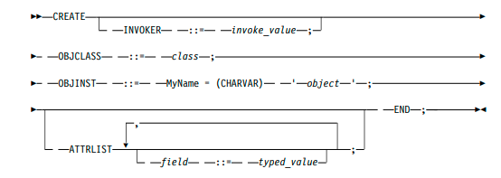
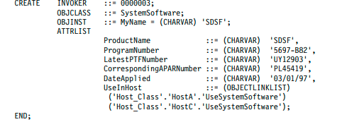
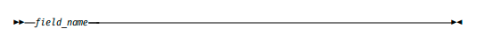

take 2 forms, short or long.
If bit 8 equals 0, the length byte is short. In this form, bits 7 to 1 represent the
length of the contents bytes as an unsigned binary integer. The contents bytes
can only be less than or equal to 127 bytes with the short form.
Figure 43 shows the short form of a length byte with the value of 86 bytes.
Figure 43. Length Byte in Short Form
If bit 8 equals 1, the length byte is long. For this form, bits 7 to 1 represent
the length of the contents bytes as an unsigned binary integer. Each
subsequent byte is an unsigned binary integer, and when added together,
represents the length of the contents bytes. If the contents bytes are greater
than 127 bytes, you must use the long form.
Figure 44 on page 223 shows the long form of a length byte with the value of
357 bytes. Two length bytes are needed to represent 357.
Figure 44. Length Byte in Long Form
Null Value
Length field is zero.
PL/I Declaration
% BERVar = ’CHAR(32767) VARYING’;
C Declaration
typedef _Packed struct {
Smallint Length;
Anonymous Text[1];
} BERVar;
CharVar
Data Type Identifier
4
Description
Variable-length character string of up through 32767 bytes. The structure of this
data type is a 2-byte length field followed by the characters in the string. CharVar
data can be optionally terminated with a null byte with value X'00' by the user for
C string support. When RODM formats character strings, it always adds the null
terminator. For example, a CharVar field specified with the null byte that contains
the string “RODM” has the value X'0004D9D6C4D400'. Note that the null
terminator byte is not included in the length field of the CharVar data.
For information about specifying a CharVar string in a SelfDefining data string, see
“SelfDefining” on page 233.
For DBCS (double-byte character set) support, the special control character
shift-out (X'0E') can begin a DBCS string, and the control character shift-in (X'0F')
can end a DBCS string. When embedded between the shift-out and shift-in control
characters, each double-byte character is counted as two bytes. In addition, the
shift-out and shift-in characters are included in the length of the DBCS string. The
valid double-byte characters are the same as those for the GraphicVar data type;
see “GraphicVar” on page 227.
Null Value
Length field is zero.
PL/I Declaration
% CharVar = ’CHAR(32767) VARYING’;
C Declaration
typedef _Packed struct {
Smallint Length;
char Text[1];
} CharVar;
CharVarAddr (Reserved)
Data Type Identifier
7
Description
Pointer to any variable-length character string. The pointer does not imply any
maximum length requirements.
Null Value
NULL pointer
PL/I Declaration
% CharVarAddr = ’POINTER’;
C Declaration
typedef Pointer CharVarAddr;
ClassID (Reserved)
Data Type Identifier
1
Description
A full-word integer that identifies a class to RODM. ClassID is the data type only
of the MyID field on a class and the MyPrimaryParentID field on classes and
objects.
Null Value
All bits are zero.
PL/I Declaration
% ClassID = ’FIXED BINARY(31)’;
C Declaration
typedef long ClassID;
ClassID (Reserved)
Data Type Identifier
2
Description
A list of Class IDs. This is the data type only of the MyClassChildren field of a
class. The Length field of ClassIDList is the number of elements in the list, not the
length in bytes.
Null Value
Length field is zero.
PL/I Declaration
DCL
1 ClassIDList EKG_BOUNDARY,
3 Len Integer,
3 List(1) ClassID;
Note: EKG_BOUNDARY is a character substitution for the UNALIGNED and
BASED PL/I attributes and is used with all abstract data type Pl/I definitions
using DCL statements.
C Declaration
typedef _Packed struct {
Integer Length;
ClassID List[1];
} ClassIDList;
ClassID (Reserved)
Data Type Identifier
6
Description
A 4-byte length field followed by a list in which each entry is a concatenated Class
ID and Field ID. The Length field of ClassLinkList is the number of elements in the
list, not the length in bytes. Each entry specifies a link to some field of a class,
required for a system-class definition of the MyClassChildren field of a class.
Null Value
Length field is zero.
PL/I Declaration
DCL
1 ClassLinkList EKG_BOUNDARY,
3 Len Integer,
3 List(1),
5 ClassIdentifier ClassID,
5 FieldIdentifier FieldID;
Note: EKG_BOUNDARY is a character substitution for the UNALIGNED and
BASED PL/I attributes and is used with all abstract data type Pl/I definitions
using DCL statements.
C Declaration
typedef _Packed struct {
Integer Length;
ClassLink List[1];
} ClassLinkList;
ClassID (Reserved)
Data Type Identifier
8
Description
The 4-byte address of an ECB that the RODM program uses to post an application
when an event occurs. The EKG_NotificationQueue class requires this data type.
Null Value
Null pointer
PL/I Declaration
% ECBAddress = ’POINTER’;
C Declaration
typedef void *ECBAddress;
FieldID
Data Type Identifier
26
Description
A full-word integer for field identifiers. This data type is used for fields that
contain the identifier of other fields.
Null Value
All bits are zero.
PL/I Declaration
% FieldID = ’FIXED BINARY(31)’;
C Declaration
typedef long FieldID;
Floating Data Type Identifier
9
Description
A floating point number for general use. The number is represented in eight bytes.
Null Value
All bits are zero.
PL/I Declaration
% Floating = ’FLOAT BINARY(53)’
C Declaration
typedef double Floating;
GraphicVar
Data Type Identifier
5
Description
A sequence of data constructed as a 2-byte length field followed by a set of
double-byte characters. The value of the length field must be no more than 16,383
double-byte units. One 16-bit double-byte character has a length of one
double-byte unit. Valid characters must have both the first and second byte of data
defined in the range X'41' through X'FE'. The characters X'4040' are also valid.
GraphicVar data is terminated by two null bytes with value X'0000'. The null
terminator bytes are not included in the length field of the GraphicVar data.
Null Value
Length field is zero.
PL/I Declaration
DCL
1 GraphicVar EKG_BOUNDARY,
3 Len Smallint,
3 Text CHAR(1);
C Declaration
typedef _Packed struct {
Smallint Length;
Smallint Text[1];
} GraphicVar
Integer
Data Type Identifier
10
Description
Full-word integer intended for general use.
Null Value
All bits are zero.
PL/I Declaration
% Integer = ’FIXED BINARY(31)’;
C Declaration
typedef long Integer;
IndexList
Data Type Identifier
32
Description
A variable-length string of data that is composed of multiple values up through a
maximum of 32767 bytes. The data is a list of AnonymousVar data values, and
each individual data value in the list has the following characteristics:
- Must be unique within the field.
- Has a maximum length of 254 bytes
- v Is composed of a 2-byte length field followed by the number of data bytes
specified by the length field. The AnonymousVar data type identifier is not part
of the value
Figure 45 shows an example Indexlist string that contains three AnonymousVar
values:
Figure 45. Example IndexList Field
Null Value
Length field is zero.
PL/I Declaration
% IndexList = ’CHAR(32767) VARYING’;
C Declaration
typedef _Packed struct {
Smallint Length;
char Text[1];
} IndexList;
MethodName (Reserved)
Data Type Identifier
11
Description
An 8-character data type for the name of a method.
Null Value
NullMeth.
PL/I Declaration
% MethodName = ’CHAR(8)’;
C Declaration
typedef _Packed struct {
char Data_char[8];
} MethodName;
method_parameter_list (Reserved)
Data Type Identifier
12
Description
Long-lived parameters retained by RODM and passed to a method. The maximum
length is 254 bytes, excluding the 2-byte header of X'000C'.
Null Value
Length field is zero
PL/I Declaration
% method_parameter_list = ’SelfDefining’;
C Declaration
typedef SelfDefining method_parameter_list
MethodSpec
Data Type Identifier
13
Description
A method object ID plus a method parameter list that specify an object-specific
method and the parameters that it has when you trigger it.
Null Value
Method object ID for the reserved method named NullMeth concatenated with a
null method parameter list.
PL/I Declaration
DCL
1 MethodSpec EKG_BOUNDARY,
3 ObjectIdentifier ObjectID,
3 MthdParmList SelfDefining;
C Declaration
typedef _Packed struct {
ObjectID ObjectIdentifier;
SelfDefining MthdParmList;
} MethodSpec;
ObjectID (Reserved)
Data Type Identifier
14
Description
Double word for an object ID, required on the MyID field of an object.
Null Value
All bits are zero.
PL/I Declaration
% ObjectID = ’BIT(64)’;
C Declaration
typedef _Packed struct {
Smallint Collision_number;
Smallint Class_identifier;
Integer Object_identifier;
} ObjectID;
ObjectIDList (Reserved)
Data Type Identifier
15
Description
A list in which the entries are Object IDs. The data type of the MyObjectChildren
field on a class. A sequence of data constructed as a 4-byte length field followed by
a concatenation of the ObjectIDs that are the entries in the list. The Length field of
ObjectIDList is the number of elements in the list, not the length in bytes. All
object IDs in the list are concatenated and contiguous.
Null Value
Length field is zero
PL/I Declaration
DCL
1 ObjectIDList EKG_BOUNDARY,
3 Len Integer,
List(1) ObjectID;
C Declaration
typedef _Packed struct {
Integer Length;
ObjectID List[1];
} ObjectIDList;
ObjectLink
Data Type Identifier
16
Description
Double-word object ID plus field ID for specifying a link to a field in another
object.
Null Value
A NULL Object ID concatenated with a NULL field ID.
PL/I Declaration
DCL
1 ObjectLink EKG_BOUNDARY,
3 ObjectIdentifier ObjectID,
3 FieldIdentifier FieldID;
C Declaration
typedef _Packed struct {
ObjectID ObjectIdentifier;
FieldID FieldIdentifier;
} ObjectLink;
ObjectLinkList
Data Type Identifier
17
Description
A list of Object Links. A sequence of data constructed as a 4-byte length field
followed by the concatenation of the Object Links that are the entries in the list.
The Length field of ObjectLinkList is the number of elements in the list, not the
length in bytes. All object IDs in the list are concatenated and contiguous.
Null Value
Length field is zero
PL/I Declaration
DCL
1 ObjectLinkList EKG_BOUNDARY,
3 Len Integer,
3 List(1),
5 ObjectIdentifier ObjectID,
5 FieldIdentifier FieldID;
C Declaration
typedef _Packed struct {
Integer Length;
ObjectLink List[1];
} ObjectLinkList;
ObjectName (Reserved)
Data Type Identifier
18
Description
The data type of the MyName field of an object. The name consists of no more
than 254 characters, terminated by one byte of X'00'. The structure of ObjectName
data is a 2-byte length field followed by the characters in the string. The null
terminating character is not included in the length field. See “Object Names” on
page 205 for information about valid object names.
Null Value
Length field is zero; in PL/I, set with string = '
PL/I Declaration
% ObjectName = ’CHAR(254) VARYING’;
C Declaration
typedef _Packed struct {
Smallint Name_length;
char Name_content[255];
} ObjectName
RecipientSpec (Reserved)
Data Type Identifier
20
Description
Information that notification methods require to notify an application program. A
sequence of data including an 8-byte ApplicationID, an 8-byte notification-queue
SubscribeID, and an 8-byte user word of data type Anonymous.
Null Value
Concatenation of a null Application ID, a null SubscribeID, and a null
Anonymous(8) string
PL/I Declaration
DCL
1 RecipientSpec EKG_BOUNDARY,
3 User_appl_ID ApplicationID,
3 Notification_queue SubscribeID,
3 User_word Anonymous(8);
C Declaration
typedef _Packed struct {
ApplicationID User_appl_ID;
SubscribeID Notification_queue;
Anonymous User_Word[8];
} RecipientSpec;
SelfDefining
Data Type Identifier
19
Description
A string of no more than 32767 bytes that is a concatenation of tagged data items;
each tagged data item represents a RODM abstract data-type ID followed by its
corresponding data. All reserved abstract data types can be used in SelfDefining
data strings except the Anonymous(N) data type.
Figure 46 shows the format of SelfDefining data
Self_Defining
Figure 46. SelfDefining Data Type Syntax
The following variables are used in the SelfDefining syntax:
length
A 2-byte integer that specifies the total length of the SelfDefining data string
excluding the 2-byte length field itself.
identifier
A 2-byte unsigned integer that specifies the RODM data type of the data that
immediately follows the identifier in the SelfDefining data string. Data type
identifiers are specified in the RODM data type definitions in “Abstract Data
Type Reference” on page 219.
value
The value of the data that is specified by identifier. For values that are of data
type ObjectName and ShortName, the null terminator is not included in the
SelfDefining data string.
When specifying a CharVar inside a SelfDefining data string, you must include the
1-byte null terminator in the length field of the SelfDefining data string, but do not
include it in the length field of the CharVar specification within the SelfDefining
data string
Figure 47 on page 234 shows an example SelfDefining string that contains a
Smallint with a 2-byte (short integer) hexadecimal representation of the value 2010,
a CharVar with the value RODM, and an 8-byte application ID value of NETV, which
is padded on the right with four blanks.
Figure 47. Example SelfDefining Field
Null Value
Length field is zero.
PL/I Declaration
% SelfDefining = ’CHAR(32767) VARYING’;
C Declaration
typedef _Packed struct {
Smallint Data_length;
Anonymous Data_content;
} SelfDefining;
ShortName (Reserved)
Data Type Identifier
23
Description
Data type of the MyName field on a class and MyPrimaryParentName field on any
object or class. The name consists of no more than 64 characters, terminated by one
byte of X'00'. The structure of ShortName data is a 2-byte length field followed by
the characters in the string. For information about constructing field names, see
“RODM Fields” on page 206.
Null Value
Length field is zero; in PL/I, set with string = '.
PL/I Declaration
% ShortName = ’CHAR(64) VARYING’;
C Declaration
typedef _Packed struct {
short Name_length;
char Name_content[65];
} ShortName;
Smallint
Data Type Identifier
21
Description
A 2-byte (half-word) signed integer for general use.
Null Value
All bits are zero.
PL/I Declaration
% Smallint = ’FIXED BINARY(15)’;
C Declaration
typedef short Smallint;
SubscribeID (Reserved)
Data Type Identifier
22
Description
The 8-character notification queue name that is used to associate a field with a
notification queue when the field is subscribed to. The association is established
during the subscription process. The characters are positioned left-justified within
the eight bytes and padded with blanks (for code page 00500, X'40') on the right.
Null Value
All bytes are blank (X'40' for code page 00500).
PL/I Declaration
% SubscribeID = ’CHAR(8)’;
C Declaration
typedef _Packed struct {
char Data_char[8];
} SubscribeID;
SubscriptSpec (Reserved)
Data Type Identifier
24
Description
A method specification plus a recipient specification used to record a notification
request in the RODM program. The SubscriptSpec includes information about the
method, the method parameters, and the intended recipient of the notification.
Null Value
Concatenation of a null MethodSpec and a null RecipientSpec
Note:The MethodSpec data type, a part of the SubscriptSpec data type, consists of
an ObjectID and a method parameter list. The method parameter list is
self-defining and is, in PL/I syntax, CHAR(254) VARYING.
SubscriptSpecList (Reserved)
Data Type Identifier
25
Description
The data type of a notify subfield. This data type contains a list of SubscriptSpec
elements, where each SubscriptSpec element represents a notification subscription.
The length field of SubscriptSpecList is the number of elements in the list, not the
length in bytes. All SubscriptSpec elements in the list are concatenated and
contiguous.
Null Value
All bits are zero
PL/I Declaration
DCL
1 SubscriptSpecList EKG_BOUNDARY,
3 Len Integer,
3 Text CHAR(1);
C Declaration
typedef _Packed struct { Integer Length; char Text[1]; } SubscriptSpecList;
TimeStamp
Data Type Identifier
27
Description
The time value represented in Lilian milliseconds (eight bytes). Lilian milliseconds
is the number of milliseconds since midnight 14 October 1582, which marks the
beginning of the use of the Gregorian calendar. The time range provided is from 14
October 1582 through 31 December 9999. This is similar to the time format that is
supported by the Common Execution Library for IBM compilers. To use this time
with the Common Execution Library routines, divide the value by 1000.
Generation of this time format assumes that the Time-of-day (TOD) clock is set to
Greenwich Mean Time (GMT) and based on the standard epoch.
Null Value
All bits are zero.
PL/I Declaration
% TimeStamp = ’FLOAT BINARY(53)’;
C Declaration
typedef double TimeStamp;
TransID (Reserved)
Data Type Identifier
28
Description
The transaction ID is a unique identifier of a RODM transaction.
Null Value
All bits are zero.
PL/I Declaration
% TransID = ’CHAR(8)’;
C Declaration
typedef _Packed struct {
char Content[8];
} TransID
Chapter 10. Using the RODM Load Function
This chapter describes how to create your own data model and load object
definitions using the RODM load function. You create a data model as part of
creating a new RODM application that does not use a data model that is supplied
by IBM. This can be done by modifying an existing model or creating an entirely
new data model using RODM load function statements.
The RODM load function enables you to create a data model and define its initial
data values. It enables you to create, modify, and delete RODM classes and objects
while the RODM program is running. You create sequential data sets that contain
the load function statements. The load function reads the input data sets and loads
the information into the RODM data cache.
This section covers these topics:
- Considerations when designing a data model
- Introduction to the RODM load function
- Using load function statements
- Process for loading the data cache
- Load function reference
You can use the load function to update an existing data model while RODM is
running. You can run the load function using an initialization method so that it
runs before RODM accepts any other transactions.
Considerations When Designing a Data Model
RODM classes can have objects as children, other classes as children, or both
objects and other classes as children. You can add a new class or a new object to a
parent class, as shown in Figure 48.
Figure 48. Adding Objects and Classes
Introduction to the RODM Load Function
The RODM load function is a part of RODM that shares libraries with RODM, but
operates like an application program through the RODM user application program
interface (API). It performs operations on the RODM data cache using load
function statements. You code these statements in sequential files which are used
as input to the RODM load function.
Load Function Statements
Two different levels of load function statements are processed by the RODM load
function:
- High-level load function statements
- Load function primitive statements
RODM high-level load function statements are the statements most commonly
used when defining your data model hierarchy. During RODM load function
processing each of these statements is parsed into one or more RODM load
function primitive statements. These primitive statements are then processed for
syntax and action.
RODM load function primitive statements are the low-level syntax statements.
They are either generated by the RODM load function from processing high-level
statements or used directly as input to the RODM load function for loading and
managing the RODM data cache. Each primitive statement corresponds closely to a
user API call, but in some cases can include more than one user API call.
In addition, there are common syntactic elements which are a group of described
variables used in RODM high-level load function syntax and RODM load function
primitive syntax.
Load Function Operations
The RODM load function provides three different operations that enable you to
load, update, and validate the contents of the RODM data cache. These three
operations are:
- Parse
- Load
- Verify
The parse operation processes the load function input files and tests the syntax of
all of the statements. No changes are made to the data cache, and RODM does not
need to be running when you use the parse operation. This operation returns error
messages for any statements in the load function input files that contain syntax
errors. However, it cannot generate errors for problems such as assigning a value
to a field that does not exist.
The load operation parses the load function input files and updates the contents of
the RODM data cache. The load function input files can contain both high-level
load function statements and load function primitive statements.
The RODM load function returns error messages for any statements in the load
function input files that contain syntax errors. The load function also returns error
messages for any request that does not complete successfully, even if the syntax
was correct. For example, if you try to assign a value to a field which does not
exist, the load function returns an error. Because the load function converts each
high-level load function statement into several load function primitive statements
as part of its processing, you might receive error messages which describe
problems with load function primitives when you code a high-level load function
statement.
Before you run the load operation, run the parse operation and correct any syntax
errors. Then, use the load operation to create or update the contents of the data
cache. You can update the data cache using the load function any time RODM is
running.
The verify operation parses the load function input files and compares the
statements with the contents of the data cache. No changes are made to the data
cache, but RODM must be running to use the verify operation. The verify
operation enables you to determine if specified classes, objects, and fields exist in
the data cache. You can also determine if a field has a specified value. See
“Understanding the Verify Operation” on page 258 for a more detailed description
of the verify operation.
Loading the RODM Data Cache
After you create the RODM load function input files, you need to run the load
function to load the RODM data cache. You call the RODM load function as any of
the following items:
- An initialization method run at RODM start
- A module call from a program
- v A JCL batch job
You have different types of loads from which to choose:
Initialization
You load the methods, the class structure, and the object definitions at
RODM start.
Structure only
You load only the methods and the class structure definitions—a structure
load.
Object only
You load only the object definitions—an object load.
The RODM load function loads the RODM data cache with a data model based on
definitions in the load function input data sets. These data sets are identified to the
RODM load function by the JCL data definition (DD) statements labeled:
EKGIN1
Class structure definitions
EKGIN2
Method name table
EKGIN3
Object definitions
For more information about loading the RODM data cache, see “Process for
Loading the RODM Data Cache” on page 244.
Using Load Function Statements
This section describes the RODM high-level load function statements and the
RODM load function primitive statements, and when to use them. The RODM
load function uses these statements to issue RODM user API calls that cause
RODM to:
- Create classes, objects, fields, and subfields
- Delete classes, objects, fields, and subfields
- Set fields to initial values
- Establish the parent-child relations that define the hierarchy
- Set the values of fields
- v Trigger methods
High-Level Load Function Statements
This topic describes the RODM high-level load function statements. For
information about coding these statements, see “Coding RODM High-Level Load
Function Statements” on page 273.
The four RODM high-level load function statements are:
MANAGED OBJECT CLASS
The RODM high-level load function class structure syntax you use to build
the hierarchy of the data model in the RODM data cache by adding class
definitions and setting initial values.
CREATE
The RODM high-level load function object syntax you use to create an
object of a class in the RODM data cache.
DELETE
The RODM high-level load function object syntax you use to delete an
object from the RODM data cache.
SET
The RODM high-level load function object syntax you use to set the values
of fields of objects in the RODM data cache.
When RODM high-level load function statements are processed, each RODM
high-level load function statement is first converted to RODM load function
primitive statements. For example, the following MANAGED OBJECT CLASS
high-level load function statement defines a child class named SNA_Domain_Class
with a field named SNANet under the class named Domain_Parent_Class:

The high-level statement is parsed by the RODM load function and results in the
following RODM load function primitive statements:
OP SNA_Domain_Class HAS_PARENT Domain_Parent_Class;
OP SNA_Domain_Class HAS_FIELD (CHARVAR) SNANet;
Each RODM load function primitive statement is then processed for syntax and
action. See “Load Function Primitive Statements” on page 243 for more
information about RODM load function primitive statements.
If any of the RODM load function primitive statements generated for a RODM
high-level load function statement encounters an error, any subsequent RODM
load function primitive statements for that RODM high-level load function
statement will be ignored. That means any syntax errors following the detected
error within the bounds of the RODM high-level load function statement being
processed will not be detected.
Load Function Primitive Statements
The RODM load function primitives are an external interface that is at a lower
level than the RODM high-level load function statements described in “High-Level
Load Function Statements” on page 242. For information about how to code
RODM load function primitive statements, see “Coding RODM Load Function
Primitive Statements” on page 281.
RODM load function primitives come directly from user-generated input files or
are generated by the RODM load function from RODM high-level load function
statements within the input files. Both RODM load function primitives and RODM
high-level load function statements can be used in the same RODM load function
input file, but load function primitives cannot be coded within a high-level
statement.
The load function processes primitive statements sequentially, one primitive
statement at a time. The RODM load function interprets each of them according to
their processing options and issues the appropriate user API calls to perform
RODM functions. The primitives correspond very closely to the user API calls, but
in some cases they can include more than one user API call.
When to Use High-Level or Primitive Load Function
Statements
Use RODM high-level load function statements when you are:
- Performing the initial loading of a data model
- Making changes to the structure of the data model
- Adding a large number of classes or objects into the RODM data cache, where
using RODM load function primitives is cumbersome
Use RODM load function primitives to define class structure changes that involve
the deletion of classes, the modification of classes, the modification of the
hierarchy, or when a desired function cannot be performed by a high-level
statement.
The following RODM load function primitives perform functions that cannot be
performed by RODM high-level load function statements for objects or classes:
FORCE_HAS_NO_INSTANCE
Unconditionally, deletes an object after unlinking any links the object has
FORCE_NOT_A_CLASS
Unconditionally, deletes a class and any children of the class, regardless of
links
HAS_NO_FIELD
Deletes a field within a class
HAS_NO_SUBFIELD
Deletes a subfield within a field.
INVOKED_WITH
Triggers a named or object-independent method
NOT_A_CLASS
Conditionally deletes a childless class.
The following RODM load function primitives perform functions that cannot be
performed on classes by RODM high-level load function statements:
Note: RODM high-level load function statements can perform these functions on
objects
HAS_VALUE
Defines a value for a field within a class.
The RODM high-level load function statement MANAGED OBJECT
CLASS can define an initial value for the field of a specific class, but it
cannot be used to change the value.
INHERITS
Removes the locally defined value for the specified class field and reverts
the field value to the value that it inherited from its parent.
SUBFIELD_HAS_VALUE
Defines a value for a subfield within a class.
Only the value subfield can be initialized for the class by the RODM
high-level load function statement MANAGED OBJECT CLASS.
SUBFIELD_INHERITS
Removes the locally-defined value for the specified class subfield and
reverts the subfield value to the value that it inherited from its parent.
You can code the primitives for either a structure load or an object load, but you
must define all of the structure first and then define the objects because you must
ensure that parent classes are created before their class children or their object
children are created.
When it is easier to perform an operation with a RODM load function primitive
than with a RODM high-level load function statement, use a RODM load function
primitive. For example, the field value of the field named SNANet of the object
named CNM01 under the class named SNA_Domain_Class can be set to a new
value with the SET high-level statement, but you need several lines of SET
statement syntax:
Whereas, you can use the HAS_VALUE primitive to set the field value of the object
with only one line of syntax:
OP SNA_Domain_Class.CNM01.SNANet HAS_VALUE (CHARVAR) ’NETC’;
Process for Loading the RODM Data Cache
This section describes the process used to load the RODM data cache using the
RODM load function. The process steps are first listed in order and described in
the same order.
Loading the RODM data cache involves the following steps:
1. “Identifying the Methods to Install”
2. “Creating the Class Structure and Object Definitions”
3. “Deciding on the Type of Load” on page 246
4. “Running the RODM Load Function” on page 248
5. “Checking the Output Listings” on page 253
You can use optional steps to change member names and parameter mapping:
- Modify the control table; see “Control Table—EKGCTABL” on page 260.
- Modify the parameter mapping table; see “Parameter Mapping Table” on page
262.
Identifying the Methods to Install
When you load the class structure as part of an initial load or a class structure
change, you can also install the methods. You identify the methods to be installed
in the RODM address space in the method name table (EKGINMTB). The table is a
member of the partitioned data set identified by the EKGIN2 DD statement. See
“Method Name Table” on page 261 for information about the format of the table
and other associated DD statements.
When you run the RODM load function and specify LOAD=STRUCTURE, the
RODM load function performs the following steps for each method name specified
in the method name table:
1. Searches STEPLIB DD data sets to ensure method is available
2. Creates a method object
3. Installs the method
If the method is already installed or is specified twice in the method name table,
the RODM load function will issue the error message:
EKG8568W -
THE METHOD method_name HAS NOT BEEN INSTALLED AS IT ALREADY EXISTS
You must have an EKGIN2 file. If you are installing no methods, the EKGIN2 file
is an empty file. The methods must reside in one of the data sets identified by the
STEPLIB DD statement in the target RODM start up JCL
Creating the Class Structure and Object Definitions
Create sequential files that contain your class structure and object definitions, when
you are:
- Performing the initial load of the class structure and object definitions into the
RODM data cache - Making changes to the structure of the data model or defined objects in the data
cache
These definitions consist of RODM high-level load function statements and RODM
load function primitives. See “Using Load Function Statements” on page 242 for
more information about using RODM high-level load function statements and
RODM load function primitives.
Data Definition Statement Labels
The RODM load function expects to find the DD statements that declare the
sequential data set or the concatenation of sequential data sets that contain the
load function input definitions to be labeled:
- EKGIN1 for the class structure definitions
- EKGIN3 for the object definitions
Although this is the load function's expectation, practically, you can put all your
definitions into a single sequential data set or concatenation of sequential data sets.
You choose either EKGIN1 or EKGIN3 as the DD name of the DD statement that
identifies the data set depending on the type of load. See “Deciding on the Type of
Load” for information about the type of load dependency.
This technique is especially useful for incremental data cache changes, but it is
very important that you observe the concatenation caveats described in
“Concatenation of Data Sets.”
Concatenation of Data Sets
You can divide the class structure and object definitions into several sequential
data sets and then concatenate the data sets that contain these definitions. The
order of the data sets in the concatenation is important. Whether you use RODM
high-level load function statements or RODM load function primitives, you must
arrange the files containing the definitions so that:
- v RODM load function creates any parent class before it creates its children
- Class structure definitions precede any associated object definitions
- The statements that create objects are processed before the statements that create
links between objects
You can concatenate object definitions so that each data set contains one or more
object definitions, and a data set can represent a domain, a subarea, or whatever
makes sense. By structuring your data sets in this way, you can facilitate adding or
refreshing information for a domain.
Definition Examples
RODM provides two sample files in the samples library partitioned data set named
CNMSAMP.
Member
Contents
EKGIN1
An example of load function statements designed to:
- Create a class under the UniversalClass
- Create fields for all data types supported
- Set initial values for the fields
EKGIN3
An example of load function statements designed to:
- Create 3 objects
- Set initial values
Deciding on the Type of Load
The steps in the loading process differ, depending on how you intend to run the
RODM load function and on what type of load you are performing. You can run
the RODM load function as an initialization method during a cold start of RODM
or during a warm start of RODM. You can run the RODM load function by means
of a JCL job. You can run the RODM load function by means of a module call from
an application. The RODM load function offers the following load types:
- “Initialization Load” on page 247
- “Structure Load Only” on page 247
- v “Object Load Only” on page 248
Initialization Load
In an initialization load, you can load the class structure, the names of the methods
to install, and the object definitions. This is done at RODM cold start by invoking
EKGLISLM.
Initialization requires three DD statements for input data with the following labels:
EKGIN1
Class structure definitions
EKGIN2
Method name table
EKGIN3
Object definitions
When RODM initialization takes place, the RODM load function (EKGLISLM), is
triggered to create the RODM structure. This initial load method runs an
object-independent method that sets the values of the objects in the RODM data
cache. After completion of the initial load, further changes are usually
modifications of defined objects or the addition of new object definitions.
In an initial load, you cannot directly specify the RODM load function parameters.
RODM uses a parameter mapping table (EKGPTENU). If you want to change the
default values of the parameters, change the default values in the parameter
mapping table. When the load function is initially run, the load function
parameters get their default values from the parameter mapping table. However,
the load function ignores any abbreviations or string substitutions in the table. See
“Parameter Mapping Table” on page 262 for information about creating your own
parameter mapping table or modifying the table copied during RODM installation.
For a display of the parameter mapping table that EKGPTENU supplied with
RODM, see Figure 60 on page 263.
Structure Load Only
A structure load is a load in which you load only the methods and the class
structure into RODM. This is generally done as a job containing JCL or a module
call while RODM is running.
EKGIN2 Data Definition: RODM load function first processes the data definition
statement with the label EKGIN2, which specifies the partitioned data set that
contains the method name table in one of its members. The name of the member
that contains the method name table is found by RODM in the control table
EKGCTABL. For information about control table EKGCTABL and how to
optionally modify or create a new table, see “Control Table—EKGCTABL” on page
260.
For each entry in the method name table, the RODM load function:
1. Searches the data sets identified by the STEPLIB DD statement in the RODM
start up JCL to see if the method is installed. If the method is not installed, a
return code of 8 and a reason code of 81 is returned and the load function
issues an error message.
2. Converts into RODM user API calls the load function primitives that associate
the entries in the method name table with the MethodName fields of the
appropriate classes. In other words, adds an object to the RODM EKG_Method
class.
3. Loads the method into the RODM address space.
EKGIN1 Data Definition: During a structure load, whether an initial structure
load or a structure change, the RODM load function processes the EKGIN1 data
definition statement after the EKGIN2 data definition statement processing is
complete.
EKGIN1 identifies the sequential data set or concatenation of sequential data sets
that contain the load function input statements that specify the classes and their
parents.
The RODM load function reads this input as a stream of class definitions in
sequential order, and parses all RODM high-level load function statements into
RODM load function primitives. The RODM load function then converts the load
function primitives to a succession of RODM user API calls, which create the
classes in your RODM data cache.
When concatenating data sets, the order of the data sets in the EKGIN1 DD
statement is important. Load the data sets that contain parent classes before those
that contain their children. Figure 49 shows a concatenation of data sets for the
EKGIN1 DD statement.
Figure 49. Data Set Concatenation for EKGIN1
Object Load Only
In an object load, you can load only the object definitions. You can load object
definitions as a job or as a module call while RODM is running. The object load
uses one DD statement labeled EKGIN3 to identify the sequential data set or
concatenation of sequential data sets that contain the object definitions for the load.
When you concatenate data sets, be sure that the statements that create objects are
processed before the statements that create links between objects. Both objects
being linked must be in RODM when the link statement is processed.
Concatenation takes the standard z/OS format for concatenated data sets. Figure 50
shows a concatenation of data sets for the EKGIN3 DD statement.
Figure 50. Data Set Concatenation for EKGIN3
Running the RODM Load Function
This topic describes running the RODM load function, plus considerations when
running the load function, in the following order:
- The load function as an initialization method
- Invoking the load function as a batch job
- Running the load function from a module
- Considerations when running the load function
You can run the RODM load function by running it as an initialization method, as
a job, or as a module call. A RODM load function job can parse the data model,
load the data model into the RODM data cache, or verify the data model.
A good practice is to parse your data model definition before you attempt to load
it. This can reduce the number of errors that occur during the load. This practice
enables you to identify and correct errors in your load function input statement
syntax prior to loading these definitions into your RODM data cache.
The Load Function as an Initialization Method
Use the initialization method provided with the NetView program or you can
write one. In either case, before the initialization method can be triggered, an
object with the name of the method must be created in the EKG_Method class by
the user or by the RODM load function.
The initialization method that is supplied by the NetView program has two parts:
EKGLISLM
Loads the methods defined in the method name table identified by the
EKGIN2 DD statement; loads the class structure definitions in the
sequential data set or concatenation of sequential data sets identified by
the EKGIN1 DD statement; and then triggers EKGLIILM.
EKGLIILM
Loads the object definitions in the sequential data set or concatenation of
sequential data sets identified by the EKGIN3 DD statement.
EKGLISLM and EKGLIILM run as methods in the RODM address space. These
methods use the environment that RODM passes to them and operate as
object-independent methods.
Cold Start (Initialization): To initialize RODM and load the data cache from a
cold start, you specify the name of the initialization method using the INIT=
parameter of the RODM start up command. You run a program (EKGTC000),
which triggers EKGLISLM, the load function initialization method, which in turn
triggers EKGLIILM. Because a cold start requires a structure load, you do not
specify INIT=EKGLIILM as a parameter of the RODM start up command for a
cold start.
The NetView program provides an example of a RODM startup procedure named
EKGXRODM. This procedure performs an initialization load, but before running
this start up procedure, make the following modifications to the start up procedure
JCL:
- v Change the specification of USER.METHODS for DSN= parameter on the
STEPLIB DD statement to reflect the name of the partitioned data set containing
your user-written methods. If there are none, comment out or delete this
statement. - Ensure that EKGIN1 and EKGIN3 DD statements identify your class structure
and object definitions. The supplied procedure identifies data sets that contain
examples of how to code the definitions. - v Remove the comment delimiters from all other JCL statements.
You run the procedure by entering:
S EKGXRODM,TYPE=C,INIT=EKGLISLM
In this example:
- EKGXRODM is the procedure name.
- TYPE=C specifies a cold start operation.
- INIT=EKGLISLM specifies the name of the method to trigger.
Warm Start: Although you can use EKGLISLM to load the class structure and
object definitions into the data cache at warm start, just like a cold start, you
normally specify EKGLIILM for the INIT= parameter to load only the object
definitions. Usually you are warm starting to change the network configuration or
as a result of an error.
NetView provides an example RODM start up procedure named EKGXRODM. Use
it to perform the object definition load. Before running the procedure, make the
following modifications to the sample procedure's JCL to load only the object
definitions:
- Comment out the C Library in the STEPLIB DD, if necessary, as described in the
notes in the procedure heading. - v Ensure that the EKGIN3 DD statement identifies your definitions. The supplied
procedure identifies the data set that contains examples of how to code the
object definitions. - Remove the comment delimiters from only the EKGLUTB, EKGPRINT and
EKGIN3 DD statements.
Run the procedure by entering:
S EKGXRODM,TYPE=W,INIT=EKGLIILM
where:
- EKGXRODM is the procedure name
- TYPE=W specifies a warm start operation
- INIT=EKGLIILM specifies the name of the method to trigger.
Invoking the Load Function As a Batch Job
You can run the RODM load function as a batch job. The RODM load function
uses the verified user ID of the job submitter as the User_appl_ID to connect to
RODM. The verified user ID is obtained from the system authorization facility.
This user ID must have a minimum RODM authorization level of 3 or 5,
depending on the load function statements used. See “Authorization and
Authorization Levels” on page 252 for the required authorization level.
Your job can load:
- The object definitions only
- The methods and class structure definitions
- The methods and all the definitions
The NetView program supplies a sample job and procedure to run the RODM load
function as a batch job. The sample job EKGLLOAD calls the procedure
EKGLOADP and passes the parameters you specify. The following sections show
how to update the EKGLLOAD sample job for each of the three ways you can load
RODM.
Loading Object Definitions Only: Copy the sample job EKGLLOAD and update
it to load object definitions into RODM. Update the system level qualifier in the
EKGLOADP procedure if you do not use NETVIEW.V6R2M1 as the high-level
qualifiers of the RODM data sets on your system. The following steps give
example values for the parameters passed by the EKGLLOAD job to the
EKGLOADP procedure. Provide your own values for each parameter.
1. Update the JOB statement with your accounting information.
2. Fill in RODMNAME with the name of your RODM.
3. Fill in EKGIN3 with the name of the data set that contains your object
definitions
4. Ensure RODM is running and submit the EKGLLOAD job
Figure 51 shows the lines in EKGLLOAD updated with example values.
Figure 51. Object Load Batch Job Using EKGLLOAD Sample
Loading Method Names and Class Structure: Copy the sample job EKGLLOAD
and update it to load class and method definitions into RODM. Update the system
level qualifier in the EKGLOADP procedure if you do not use NETVIEW.V6R2M1
on your system. The following steps give example values for the parameters
passed by the EKGLLOAD job to the EKGLOADP procedure. Provide your own
values for each parameter:
1. Update the JOB statement with your accounting information.
2. Fill in RODMNAME with the name of your RODM.
3. Fill in EKGIN1 with the name of the data set that contains your class
definitions.
4. Specify LOAD=STRUCTURE for a class and method load.
5. Ensure RODM is running and submit the EKGLLOAD job.
Your methods are defined in the method table in NETVIEW.V6R2M1.CNMSAMP.
You do not need to specify this data set name. Figure 52 shows the lines in
EKGLLOAD updated with example values.

Figure 52. Class and Method Load Batch Job Using EKGLLOAD Sample
Loading Method Names and All Definitions: You have two options to load the
classes, methods, and objects using the EKGLLOAD sample job:
- Load the classes and methods first, following the steps in “Loading Method
Names and Class Structure” and then load the objects, following the steps in
“Loading Object Definitions Only” on page 250. - Put all of the class, method, and object definitions in a single data set and load
that data set by following the steps in “Loading Object Definitions Only” on
page 250.
Instead of putting all of the definitions in a single data set, you can concatenate
separate data sets. This requires updating the EKGLOADP procedure, because the
EKGLLOAD job can pass only one data set as a parameter.
Calling the Load Function from a Module
To run the RODM load function from a module, call the appropriate entry point
for the language that you are using. The RODM load function uses the verified
user ID, associated with the calling program at execution time, as the
User_appl_ID to connect to RODM. The verified user ID is obtained from the
system authorization facility. This user ID must have a minimum RODM
authorization level of 3 or 5, depending on the load function statements used. See
“Authorization and Authorization Levels” on page 252 for the required
authorization level. If a listing is requested, the listing and other information are
written to the specified data set for use by the calling module.
You must specify RMODE=24 when you link-edit the RODM load function
module.
From Modules Written in PL/I and CUser application programs written in PL/I
or C that call the RODM load function directly must call the EKGLJOB entry point.
The linkage to EKGLJOB must adhere to z/OS conventions as described in “z/OS
Linkage Conventions” on page 265. The RODM load function runs all load
functions in the user application program task control area environment.
From Modules Not Written in PL/I or C:User application programs not written
in PL/I or C that call the RODM load function directly must call the EKGLOTLM
entry point. The EKGLOTLM
entry point creates a task control area environment
in which all load functions are run. Use the same linking conventions as for
EKGLJOB. See “z/OS Linkage Conventions” on page 265.
Considerations When Running the RODM Load Function
The RODM Load Function: When running the RODM load function, you can run
only one RODM load function job per address space. Ensure that the PL/I runtime
libraries are installed or available prior to submitting or running a job. The RODM
load function sets the value of the EKG_StopMode field to 3 before disconnecting.
(Do not purge notification queues or subscriptions.) This value enables the RODM
load function to disconnect without purging any notification subscriptions,
notification queues, or notification methods that are created as the result of
methods triggered by the RODM load function.
The RODM Program:The RODM program must be running for
OPERATION=LOAD and for OPERATION=VERIFY because the RODM load
function issues a connect request to RODM to access the data cache. If RODM is
not running, an error message is issued.
RODM does not need to be running for OPERATION=PARSE. With
OPERATION=PARSE, the RODM load function reads the load function input files
and parses them to find syntax errors. The RODM load function issues the connect
function to RODM and queries the RODM version and release. Errors found in the
connect and query function are logged in the Job log and RODM log. However,
these errors are not considered as errors of the RODM load Parse operation. For
more information about OPERATION=, see “OPERATION” on page 271.
Ensure that the name you use to run the RODM load function is the same as the
name of the RODM program that is running. The specification for the NAME=
parameter must equal the name of the running RODM program. For information
about parameter NAME=, see “NAME” on page 270.
Authorization and Authorization Levels: The TSO ID and TSO password that
you use to run the RODM load function and user application programs that run
the RODM load function must be authorized by your system authorization facility
to access RODM, unless the SEC_CLASS keyword is set to *TSTRODM in
customization file EKGCUST.
The ID that runs the load function must have an authorization level of at least 3 or
5, depending on the load function statements used. Table 23 on page 253 shows the
load function statement, the statement type, the minimum authorization level, and
a reference to additional information about the statement.
Table 23. Load Function Statements and Minimum Authorization Levels
| Statement | Statement Type | Minimum Authorization Level | See Page |
|---|---|---|---|
| CREATE | High-level | 3 | 277 |
| DELETE | High-level | 3 | 278 |
| FORCE_HAS_NO_INSTANCE | Primitive | 3 | 282 |
| FORCE_NOT_A_CLASS | Primitive | 5 | 283 |
| HAS_FIELD | Primitive | 5 | 283 |
| HAS_INSTANCE | Primitive | 3 | 285 |
| HAS_NO_FIELD | Primitive | 5 | 285 |
| HAS_NO_INSTANCE | Primitive | 3 | 286 |
| HAS_NO_SUBFIELD | Primitive | 5 | 286 |
| HAS_PARENT | Primitive | 5 | 287 |
| HAS_PRV_FIELD | Primitive | 5 | 287 |
| HAS_SUBFIELD | Primitive | 5 | 288 |
| HAS_VALUE | Primitive | 3 | 288 |
| INHERITS | Primitive | 3 | 289 |
| INVOKED_WITH | Primitive | 3 | 289 |
| IS_LINKED_TO | Primitive | 3 | 290 |
| IS_NOT_LINKED_TO | Primitive | 3 | 291 |
| MANAGED OBJECT CLASS | High-level | 5 | 275 |
| NOT_A_CLASS | Primitive | 5 | 292 |
| SET | High-level | 3 | 279 |
| SUBFIELD_HAS_VALUE | Primitive | 3 | 292 |
| SUBFIELD_INHERITS | Primitive | 3 | 293 |
Checking the Output Listings
To understand the output listings, you must understand the format of the output
messages and the contents of the output listing
Note:Refer to the NetView online help for a description of the messages issued
by the RODM load function. All RODM load function messages start with EKG8.
Two output listings consisting of different types of information are created when
you run the RODM load function. One listing is created by the RODM load
function and is written to the data set specified by the EKGPRINT DD statement.
The other is system-generated output and is directed to SYSOUT. If the EKGPRINT
DD statement specifies SYSOUT as the output data set, the separate listings appear
as one report.
RODM Load Function Output Listing
The listing created by the RODM load function contains the date, the name of the
function with its current level, a list of the options used when the load function
was run, load function input, actions taken by the function, echoed syntax when
an error occurs, and messages including an END OF JOB message. See Figure 55
on page 257 for an example of the load function output listing for an object load.
When displaying the contents of the data set identified by the EKGPRINT DD
statement, ensure that the software and hardware used can do so in mixed case.
RODM data is case sensitive, and to display the data in other than mixed case
hinders your verification of the RODM load.
All syntax can be echoed, interleaved with messages, where appropriate, indicating
the success or failure of the primitive that was performed, or only syntax errors
can be echoed, with messages indicating where errors are detected. The
LISTLEVEL parameter as described on page “LISTLEVEL” on page 269 defines
which level of syntax echoing occurs.
RODM Load Function Output Format
Formats differ slightly for the RODM load function output, depending on the
following items:
- Type of operation: PARSE, LOAD, or VERIFY
- Type of load: STRUCTURE or INSTANCE
- LISTLEVEL option: ERRORSYNTAX or ALLSYNTAX
For more information about these parameters, see “RODM Load Function
Parameter Syntax” on page 269.
Compare the following figures for format differences:
- Figure 53 on page 255, a PARSE operation output example
- Figure 54 on page 256, a structure load output example
- Figure 55 on page 257, an object load output example
Figure 53. Example of PARSE Operation Output to EKGPRINT
Figure 54. Example of Structure Load Output to EKGPRINT
Figure 55. Example of Object Load Output to EKGPRINT
Load Function Reference
This section contains additional reference information for the RODM load function.
It describes the following: v Verify operation of the load function
- Usage of data types
- Null values for load function data types
- RODM tables:
– Control table—EKGCTABL
– Method name table
– Parameter mapping table
- Required and optional data definition names
- z/OS linkage conventions for the load function
- Syntax for RODM load function: – Parameters used to run the load function
– High-level statements
– Primitives
– Common syntactic elements
Understanding the Verify Operation
The verify operation parses the RODM load function input files and compares the
statements with the contents of the data cache. No changes are made to the data
cache. The verify operation parses both high-level load function statements and
load function primitive statements. The load function primitive statements are
easier to understand, so they are described first.
Each load function primitive statement description in “Syntax and Processing Logic
for Load Function Primitives” on page 282 includes an explanation of the verify
operation logic for that statement. The verify operation logic describes how the
load function compares the statement to the contents of the data cache. If the
comparison is true, the load function issues a return code of zero. If the
comparison is not true, the load function returns an error message.
For example, if you want to ensure that one class in the data cache is the parent of
another class, you can use the verify operation with the HAS_PARENT load
function primitive statement. The verify operation logic for the HAS_PARENT load
function primitive statement directs the load function to check if the specified child
class and parent class exist in the data cache. The load function then checks if the
MyPrimaryParentID field of the child class points to the parent class. RODM must
be running when you use the verify operation of the load function.
The RODM load function processes high-level load function statements by first
converting them to load function primitive statements. The load function primitive
statements are then processed as in the previous example.
For example, the following high-level load function statement can be processed by
the load function.
When you run the verify operation, the load function converts the statement to
load function primitive statements. The first two lines of the statement are
converted to the following:
OP ClassA HAS_PARENT UniversalClass;
This load function primitive statement is processed as in the first example.
Each line of the field definition list is converted to one statement to create the field
and a second statement to assign the initial value if one is supplied. The first field
definition in this example is converted to the following:
OP ClassA HAS_FIELD (CHARVAR) Field_1;
OP ClassA..Field_1 HAS_VALUE (CHARVAR) ’abc’;
Each of the load function primitive statements is then processed as described in
“Syntax and Processing Logic for Load Function Primitives” on page 282.
When you use the verify operation with load function statements that specify
values for fields, be careful because values often change. Only test for a specific
value when you are interested in that value. In the high-level load function
statement example, the initial value of Field_1 caused the load function to generate
a statement to test Field_1 for the value abc. Remove the initial values from field
definitions before using the verify operation if all you need to test for is the
structure of the data cache.
Using CLASSID and OBJECTID Data Types
The RODM load function enables you to specify the CLASSID and OBJECTID data
types for fields. However, the corresponding ClassID and ObjectID abstract data
types in RODM are reserved; you cannot create fields with these data types, except
within a SELFDEFINING variable.
CLASSID
If you create a field of type CLASSID using the RODM load function, the field is
created in the RODM data cache with the Integer abstract data type. The RODM
load function gets the class ID for the class name you specify and puts the class ID
value in the target field in the RODM data cache which must be of type Integer.
When you assign a value of type CLASSID using the RODM load function, you
supply a class name, but be sure the class name specified already exists. If you
create a field of type CLASSID using the RODM load function, but do not assign
an initial value, the field is created with a null value.
OBJECTID
If you create a field of type OBJECTID using the RODM load function, the field is
created in the RODM data cache with the AnonymousVar abstract data type. The
RODM load function gets the object ID for the object name you specify and puts
the object ID value in the target field in the RODM data cache which must be of
type AnonymousVar.
When you assign a value of type OBJECTID using the RODM load function, you
supply a class name and an object name, but be sure the object name and class
name you specify already exist. If you create a field of type OBJECTID using the
RODM load function, but do not assign an initial value, the field is created with a
null value.
Null Values for RODM Load Function Data Types
You can specify null values for some of the data types used in RODM load
function primitives and RODM high-level load function statements. This enables
you to set the value of a field to its null value as defined by RODM. The following
list shows how to specify each null value:
Control Table—EKGCTABL
You can modify the member names contained in this required control table called
EKGCTABL. This table is a member of the partitioned data set identified by the
EKGLUTB DD statement which is a required DD statement. RODM expects the
member name to remain EKGCTABL and to be contained in the data set identified
by the EKGLUTB DD statement.
The EKGCTABL control table contains two entries:
PARAMETER_MAPPING_MEMBER
Specifies the name of the member of the partitioned data set identified by
the EKGLUTB DD statement that contains the parameter mapping table.
INSTALL_METHOD_MEMBER
Specifies the name of the member of the partitioned data set identified by
the EKGIN2 DD statement that contains the method name table.
Figure 56 shows an example control table. The column scale is inserted for
explanation purposes and is not part of the control table.
Figure 56. Sample Control Table EKGCTABL with Column Scale
The required symbols PARAMETER_MAPPING_MEMBER and
INSTALL_METHOD_MEMBER must start in column 1. The member names,
EKGPTENU and EKGINMTB in this example, must start in column 41.
Relationships to Other Tables and DD Names
Figure 57 on page 261 shows the relationship between the EKGCTABL control
table, the EKGPTENU parameter mapping table, the EKGINMTB method name
table, and the EKGLUTB and EKGIN2 DD names.
In the figure, the job stream to verify the structure of a RODM named
RODMNAME has EKGLUTB and EKGIN2 DD statements. The EKGLUTB DD
statement identifies the CNMSAMP partitioned data set that contains the
EKGCTABL and EKGPTENU members. The EKGIN2 DD statement identifies the
CNMSAMP partitioned data set that contains the EKGINMTB member. RODM
uses the EKGCTABL control table to obtain the member names of the parameter
mapping table and method name table.
Figure 57. Relationship between EKGCTABL, EKGINMTB, EKGPTENU and JCL
Method Name Table
The method name table contains the names of the methods you want installed by
the RODM load function. A sample file named EKGINMTB that contains only one
entry (EKGNOTF) is shipped in the samples library
NETVIEW.V6R2M1.CNMSAMP. You can either copy that file and make
modifications or create your own.
You do not have to use the name of EKGINMTB for your method name table, but
if you use a different name you must modify the control table EKGCTABL because
in the control table that is supplied by IBM the member name specified for the
method name table is EKGINMTB. For more information about control table
EKGCTABL, see “Control Table—EKGCTABL” on page 260.
Figure 58 on page 262 shows a method name table (EKGINMTB) that declares two
user-written methods and seven methods that are supplied with the NetView
program. The column scale is inserted for explanation purposes and is not part of
the method name table.
Figure 58. Method Name Table Format with Column Scale
Each entry in a method name table consists of one row. Columns 1–8 contain the
name of the method, and columns 11–80 can optionally contain a comment, such
as the type of method.
To bypass the RODM method name table load, replace EKGINMTB with *NONE
in control table EKGCTABL as shown in Figure 59. The column scale is inserted for
explanation purposes and is not part of the method name table.
Figure 59. Sample Control Table EKGCTABL with Column Scale
Associated DD Statements and Control Table
The DD statement that declares the partitioned data set containing the method
name table as one of its members is labeled EKGIN2. The member name for the
method name table is in control table EKGCTABL which is in the partitioned data
set identified by the DD statement labeled EKGLUTB. See Figure 57 on page 261
for a pictorial of this relationship.
Parameter Mapping Table
When you run the RODM load function, you must supply parameters, such as
NAME, OPERATION, CODEPAGE, and LOAD. According to JCL conventions,
these parameters go in parentheses on the PARM= part of the EXEC statement.
They take the form:
PARM=('keyword1=keyword_value1,keyword2=keyword_value2,...')
The parameter mapping table is a fixed-block table with an LRECL of 80. The table
enables string substitutions to be used for the syntax known by the RODM load
function (internal syntax). These string substitutions can be abbreviations, a
mapping to a national language, or both. This enables the RODM load function to
use other syntax formats.
The parameter mapping table (EKGPTENU) is a member of the partitioned data
set identified by the EKGLUTB DD statement. The EKGCTABL control block
contains the member name of the parameter mapping table. See Figure 57 on page
261 for a pictorial of this relationship.
Table EKGPTENU has a one-to-one relationship between the internal syntax in
columns 1–30 and the substitution string in columns 31–80. See “RODM Load
Function Parameter Syntax” on page 269 for information about the load function
parameter data (internal syntax) in columns 1–30.
The syntax rules are:
- Internal keyword entries must start in column 1 and each related substitution
string entry must start in column 31. - Internalkeyword values must start in column 2 and each related substitution
string value must start in column 32. - The internal keyword default value must start in column 3 and the substitution
string default value must start in column 33. - For each keyword, the keyword entry is followed by the value entries for that
keyword, which are in turn followed by the default value entry for that
keyword.
Figure 60 documents the format of this table and shows examples of abbreviation
substitution strings. The column scale is inserted for explanation purposes and is
not part of the parameter mapping table
Figure 60. Sample Parameter Table EKGPTENU with Column Scale
You can modify an existing mapping table or create a new table. A sample load
function parameter mapping table can be found in member EKGPTENU of data set
CNMSAMP in the samples library supplied with RODM. Copy the sample and
make any updates to the copy. If you change the name of the parameter table, be
sure to update the EKGCTABL control table.
RODM Data Definition (DD) Statements
The DD statements that are used to run the load function declare the data sets.
Ensure that the data sets appropriate to the type of load you are running are
present. Ensure that the contents of the data sets are valid.
You can change DD names to match your needs by using the DD list structure,
which you can pass to RODM using a parameter list when the load function is
run. The DD list structure is described in “z/OS Linkage Conventions” on page
265.
STEPLIB (Required If You Do Not Use LNKLIST)
The data set identified as STEPLIB must be a partitioned data set that
contains the RODM load function code. STEPLIB is a required DD
statement when the RODM load function code is not in the z/OS
LNKLIST. Another DD statement must be concatenated to the STEPLIB DD
statement that identifies the Language Environment®
runtime library. The
format of STEPLIB is the standard DCB (data control block) format for any
link-edited data set.
EKGLANG (Required)
The EKGLANG DD statement identifies the partitioned data set that
contains the message file for the RODM load function.
EKGLUTB (Required)
The EKGLUTB data definition identifies the partitioned data set that
contains the EKGCTABL control table file as one of its members. This
required control table contains the member name of the parameter
mapping table and the member name of the method name table. For more
information about modifying the EKGCTABL control table and its
relationship with the parameter mapping table and the method name table,
see “Control Table—EKGCTABL” on page 260.
The data control block for the DD statement labeled EKGLUTB specifies
LRECL=80 and RECFM=FB for the data set. The block size must be a multiple
of 80.
EKGPRINT (Required)
The EKGPRINT data definition identifies the data set containing the
RODM load function output listing. This listing contains the load function
input, echoed syntax, a report of primitive success or failure, messages and
codes, and other information.
You can direct the print to SYSOUT, to a sequential file, or to a member of
a partitioned data set. The data set or file must specify LRECL=80 and
RECFM=FB. The block size must be a multiple of 80.
EKGIN1 (Required for Class Structure Definition)
EKGIN1 identifies the sequential data set or concatenation of sequential
data sets that contain the class structure definitions. The data sets that
define the class structure must be sequential data sets with a data control
block that specifies LRECL=80 and RECFM=FB. The block size must be a
multiple of 80. The class structure definitions which represent the GMFHS
data model are contained in member DUIFSTRC of the CNMSAMP data
set in the samples library.
EKGIN2 (Required for Class Structure Definition)
EKGIN2 identifies the partitioned data set that contains the method name
table file as one of its members. EKGIN2 must be a partitioned data set
with a data control block that specifies LRECL=80 and RECFM=FB. The block
size must be a multiple of 80. The method name table that is supplied by
IBM which has one entry of EKGNOTF (notify method) is contained in
member EKGINMTB of the CNMSAMP data set in the samples library.
EKGIN3 (Required for Object Definition)
EKGIN3 identifies the sequential data set or concatenation of sequential
data sets that contain the object definitions. You create these definitions to
define your network. The data control block of each of the data sets
concatenated as EKGIN3 must specify LRECL=80 and RECFM=FB. The block
size must be a multiple of 80. The object definitions which define the
network described in Chapter 2, “Defining Your Network to GMFHS,” on
page 15 are contained in member DUIFSNET of the CNMSAMP data set in
the samples library as an example.
Data Definitions Necessary for Initialization
If you are running an initialization method, either during a cold start or a warm
start of RODM, you need data sets for the following data definition names:
EKGIN1
EKGIN2
EKGIN3
EKGLANG
EKGPRINT
EKGLUTB
Data Definitions Necessary for Structure Load Only
When running the RODM load function either through job posting or through a
module call to load only the class structure and install methods, you need data sets
for the following data definition names:
EKGIN1
EKGIN2
EKGLANG
EKGPRINT
EKGLUTB
Data Definitions Necessary for Object Load Only
When running the RODM load function either through job posting or through a
module call to load only the object definitions, you need data sets for the following
data definition names:
EKGIN3
EKGLANG
EKGPRINT
EKGLUTB
z/OS Linkage Conventions
Figure 61 on page 266 shows the z/OS linkage requirements for running the
RODM load function by means of a module call to EKGLJOB.
Register 1 points to the parameter list, which contains up to three parameter
addresses. The first parameter address points to a parameter structure that you use
to specify the RODM load function parameters. The second parameter address is
optional unless the third parameter address is supplied. If it is supplied, it points
to a DD list structure that you use to change the default RODM load function DD
names. The third parameter address is optional. If it is supplied, it points to the
access block that was used to connect to RODM. The last address in this parameter
list must have the high-order bit set ON.
Figure 61. z/OS Linkage Conventions Required for Module Call to EKGLJOB
Parameter Structure
The parameters passed to the load function are the same as the ones specified in
the JCL except that you must provide the length of the parameter. The only
required parameter is NAME; all of the parameters that are not specified, default
to the values specified in the parameter mapping table.
The NAME parameter is ignored if the access block is specified.
The parameter structure consists of a 2-byte fixed field followed by a character
field. The fixed field must contain the length of the following character field. The
restrictions on JCL when running the load function require that the character field
to be no more than 100 bytes in length. The character field can contain any valid
combination of input parameter values.
The following is an example of the parameter structure in hextype format
(hexadecimal representation in the first line, EBCDIC in the second):
001CD5C1D4C57EC5D2C7E7D9D6C4D46BD3D6C1C47EE2E3D9E4C3E3E4D9C5
N A M E = E K G X R O D M , L O A D = S T R U C T U R E
This parameter specifies that the character field has a length of X'1C' bytes. The
character field contains the required NAME parameter and the
LOAD=STRUCTURE parameter. The remaining load function parameters will
default to the default values specified in the parameter mapping table.
DD List Structure
The DD list structure, if specified, consists of a two-byte fixed field followed by a
character field with no maximum length restriction, although the length of the
character field must be a multiple of 16. The DD list structure is used to specify
DD names only, not data set names or member names.
The character field consists of an array of DD name pairs in which each element is
16 (X'10') bytes in length. The first eight bytes is the default or old DD name used
in the RODM load function, and the second eight bytes is the new DD name to be
used in the RODM load function. This array of DD name pairs can be in any order.
If no new DD names are provided, the default required DD names specified in
“RODM Data Definition (DD) Statements” on page 264 are used.
The following is an example of the DD list structure in hextype format
(hexadecimal representation in the first line, EBCDIC in the second):
0020C5D2C7C9D5F14040E2E3D9E4C3E34040C5D2C7C9D5F34040D6C2D1C5C3E34040
E K G I N 1 S T R U C T E K G I N 3 O B J E C T
This parameter specifies that there are two DD name pairs and that the RODM
load function is to use the new DD name STRUCT instead of EKGIN1 and the new
DD name OBJECT instead of EKGIN3.
Access Block
The access block, if specified, is the access block that the user application used
when it connected to RODM. This allows a user application that is already
connected to RODM to use the RODM load function without first disconnecting
from RODM.
If the access block parameter is specified, the DD list structure must also be
specified. However, if you do not want to change the DD names, you can specify a
null string.
Calling the RODM Load Function
When you call the RODM load function, follow the linkage convention shown in
Figure 61 on page 266. The RODM load function linking convention follows a
standard z/OS approach. Use the ASM and INTER options when you define the
linkage of your modules to the RODM load function. Refer to Figure 62 on page
268 and locate the statement:
DCL EKGLJOB OPTIONS(ASM INTER) ENTRY EXTERNAL;
Figure 62 on page 268 is an example of how to call the RODM load function from
a PL/I program.
Figure 62. Calling the RODM Load Function from a PL/I Program
RODM Load Function Parameter Syntax
The following are descriptions and syntax for RODM load function parameters in
alphabetical order.
The syntax is shown in syntax diagrams.
CODEPAGE
Description
The code page for input scanning
Syntax
CODEPAGE
Usage Notes
To indicate code page 500 (U.S. English) for input scanning, you code:
CODEPAGE=EKGCP500
Note: RODM load function supports only code page 500.
LISTLEVEL
Description
The level of the listing to generate. You can list only the syntax that is in error or
list all syntax used as input to the RODM load function.
Syntax
LISTLEVEL
Usage Notes
When you specify:
LISTLEVEL=ALLSYNTAX
All syntax, including generated primitive statements, is listed with
messages indicating the success or failure of the high-level statements and
primitives that were performed interleaved where appropriate.
LISTLEVEL=ERRORSYNTAX
Only the statements in error, excluding primitive statements generated from
high-level statements, are listed with their error messages. Error messages for
generated primitive statements appear after their associated high-level
statement. The generated primitive statement that caused the error is not listed.
LOAD
Description
The type of load. A structure load or an object load.
Syntax
LOAD
Usage Notes
When you specify:
LOAD=STRUCTURE
Only the input statements from the data sets identified by the EKGIN1 and
EKGIN2 data definition statements are used. Used for structure load.
LOAD=INSTANCE
Only the input statements from the data sets identified by the EKGIN3
data definition statement are used. Used for object load.
You can also use the LOAD=STRUCTURE specification to load object definitions as
well as class structure definitions. Concatenate the data sets that contain the object
definitions, normally identified by the EKGIN3 DD statement, to the EKGIN1 DD
statement.
You can also include class structure definition with object definitions when
specifying LOAD=INSTANCE. Using concatenation of data sets, arrange the JCL
statements for the EKGIN3 DD so that the class structure definitions, usually
identified by the EKGIN1 DD, are processed first with the object definitions
following.
NAME
Description
The name of the RODM on which the load is to be performed. This is a required
parameter for structure loads and object loads.
Syntax
NAME
Usage Notes
To specify a RODM name of MYRODM code: NAME=MYRODM
The NAME parameter is required for load and verify operations. If you specify
NAME for a parse operation, the RODM load function connects to the named
RODM, but this is not required.
The NAME parameter is not required for an initialization method load. Because a
particular RODM has run the RODM load function, the RODM name is known by
the load function
OPERATION
Description
The operation the RODM load function is to perform. The operation parameter can
specify that the RODM load function parse the load function input statement
syntax for validity, load the RODM data cache, or verify that defined contents exist
prior to performing another operation.
Syntax
OPERATION

Usage Notes
You code:
OPERATION=PARSE
To parse the syntax of the data sets that contain your RODM load function
input parameters. RODM does not need to be running for
OPERATION=PARSE. With OPERATION=PARSE, the RODM load function
reads the load function input files and parses them to find syntax errors.
The RODM load function issues the connect function to RODM and
queries the RODM version and release. Any errors found in the connect
and query function are logged in the Job log and RODM log. However,
these errors are not considered as errors of the RODM load PARSE
operation.
OPERATION=LOAD
To parse the input statements and then load the data cache.
OPERATION=VERIFY
To parse and verify the contents of the RODM data cache.
Neither PARSE nor VERIFY performs the LOAD operation.
If you want to assign values to objects and wish to see which of the objects
actually exist instead of having them fail, use the VERIFY operation. For more
information about VERIFY, see “Understanding the Verify Operation” on page 258.
If LOAD=STRUCTURE, the input statements from the data sets identified by the DD
labeled EKGIN1 is parsed, but the data identified by the DD labeled EKGIN2 is
not. If LOAD=INSTANCE, only the input statements from the data sets identified by
the DD labeled EKGIN3 are parsed. This occurs for LOAD, PARSE, or VERIFY
operations.
ROUTECODE
Description
Defines the route code to be used when the loader issues messages to a console by
way of the WTO or WTOR macros. Valid values are in the range 1 – 128. The
default value is 1.
Messages that can be issued before this parameter is processed will use the default
route code 1, regardless of the value set here.
Syntax
ROUTECODE

SEVERITY
Description
The way that the application is to treat an error (return code 8) in the processing of
a class structure definition or an object definition: as an error (return code 8) or as
a warning (return code 4).
For SEVERITY=ERROR, when the RODM load function encounters an error in a
load function input statement, it ends processing at that statement and issues a
return code of 8. For SEVERITY=WARNING, when the RODM load function
encounters an error in a load function input statement, it continues processing and
issues a return code of 4 upon completion.
Syntax
SEVERITY
Usage Notes
If the application is to treat an error in the processing of a class structure definition
or an object definition as an error, you code: SEVERITY=ERROR
If the application is to treat an error in the processing of a class structure definition
or an object definition as a warning, you code: SEVERITY=WARNING
Use the WARNING option when you are parsing the syntax; use the ERROR
option when you are loading.
Coding RODM High-Level Load Function Statements
This topic of the reference section describes how to code RODM high-level load
function statements. It provides the syntax and associated rules for high-level load
function statements.
The syntax is shown in syntax diagrams.
Syntax Rules for High-Level Load Function Statements
This topic addresses syntax rules that apply to RODM high-level load function
statements.
Input Columns: The RODM load function reads all columns of an input record as
data. Do not use columns 73 to 80 for sequence or line numbers. You can use
sequence or line numbers if you mark them as comments using the comment (--)
characters.
Delimiters: Table 24 describes valid syntax delimiters for RODM high-level load
function statements.
Table 24. Syntax Delimiters for RODM High-Level Load Function Statements
| Delimiter | Function |
|---|---|
| ' ' | Used to enclose a character string. |
| X'0E' (Shift-out) | Marks the start of a DBCS mixed string data type |
| X'0F' (Shift-in) | Marks the end of a DBCS mixed string data type |
| -- (two hyphens) | Marks the beginning or end of a comment |
The RODM load function allows free-form syntax. Spaces can be used to improve
the readability of your load function input data because the RODM load function
allows one or more spaces between parts of a RODM high-level load function
statement. For example, the following MANAGED OBJECT CLASS high-level load
function statement is a valid use of spaces to improve readability:
Quoted Strings: A quoted string must begin and end on the same line. To create
a string longer than a single line, break it into separately quoted parts on multiple
lines. Multiple parts are concatenated by the RODM load function. For example,
the following two lines results in a single quoted string:
INIT(’ This is the first line of two lines ’
’ that results in one quoted string ’ );
A quotation mark contained within quotation marks is represented by two single
quotation marks, for example:
INIT(’This is ’’ a quote ’’ within a quote. ’);
Quotation marks are used to enclose the entire string, including any keywords or
separators as a portion of the string. For example:
INIT(’ Create the "MANAGED OBJECT CLASS" now ’);
Double-Byte Character Strings: All data values between a X'0E' shift-out
character and a X'0F' shift-in character are treated by the RODM load function as
double-byte character string (DBCS) data. This means that any hexadecimal codes
that normally denote delimiters are treated as data within the double-byte
character string. The valid double-byte characters are the same as those for the
GraphicVar data type; see “GraphicVar” on page 227.
Field Definition Lists: When specifying a field definition list with the ATTRLIST
or MODLIST keyword, separate each member of the list with a comma and end
the list with a semicolon. Otherwise, the RODM load function treats each member
of the list as a separate statement.
Enabled data types and data type values for high-level statements are all those
enabled by RODM. For more information about these data types, see “Abstract
Data Type Reference” on page 219. For a list of these data type values and a syntax
diagram of the typed_value load function common syntactic element, see
“typed_value” on page 303
Comments: Comments are delimited by two hyphens (--) at the beginning and at
the end. An example is:
-- This is a comment --
If the end of comment delimiter is not specified, the end of the comment is
assumed to be at the end of the input line. The RODM load function ignores all
text between comment delimiters.
Syntax for High-Level Load Function Statements
This is a syntax reference for your use in coding the RODM high-level load
function statements for the data model definition to be created in your RODM data
cache. Each RODM high-level load function statement has a description containing
the name, purpose, external syntax, parameter descriptions, and an example of use.
Note: RODM high-level load function statement syntax is case sensitive.
The examples of use for the RODM high-level load function statements in this
section are subsets of the load function input statement stream as shown in
Figure 63. These statements create and use the hierarchical pseudo-structure shown
in Figure 64 on page 275. This structure and the associated fields are an example
for explanation purposes only, they are not part of RODM.
Figure 63. Hierarchical Pseudo-Structure for Examples
Figure 64. High-Level Input Statements for Pseudo-Structure
MANAGED OBJECT CLASS:
Purpose
Use the MANAGED OBJECT CLASS high-level load function statement to define
the hierarchy and create the data model class structure in the RODM data cache.
The following syntax declares class structure that the RODM load function adds to
the RODM data cache. It does not contain keywords for resetting values,
modifying, or deleting part or all of the class structure
Syntax

Keyword and Parameter Descriptions
class The name or label of the class that you are defining.
PARENT IS parent_name
The name of the parent class of the class being created.
field type
Creates a field with name field of data type type for the class being created.
For a list of valid data types for this field, see “type” on page 301.
PUBLIC|PRIVATE|PUBLIC_INDEXED
Specifies if the field is a public, a public indexed, or a private field. Public
fields are inherited by children of this class, private fields are not inherited.
For more information about public indexed fields, see “Indexed Fields” on
page 216.
INIT(init_value)
An initial value setting for the field. INITIAL can be used instead of INIT.
Example
Consider the specification of a class named SystemSoftware that is a child of the
class named Software and has the following fields:
ProductName
ProgramNumber
LatestPTFNumber
CorrespondingAPARNumber
DateApplied
Priority
UseInHost
Suppose that the initial value for the field named ProgramNumber is None, the
initial value for the field named LatestPTFNumber is UY12345, and the initial value
for the field named Priority is 3. The following MANAGED OBJECT CLASS
statement defines the class named SystemSoftware:
Usage Notes
Observe the following rules when you specify theinit_value associated with the
INIT or INITIAL keyword in a field definition list:
- Enclose all values in parentheses
- Enclose character values in single quotation marks within the parentheses.
- Do not add additional parentheses to values for data types, such as
METHODSPEC and SELFDEFINING, that are already bound by parentheses. - Enclose non-null GRAPHICVAR values in shift-out and shift-in characters within
the parentheses. - v Enclose a null GRAPHICVAR value in single quotation marks within the
parentheses.
CREATE:
Purpose
Use the CREATE high-level load function statement to create an object of a specific
class in the RODM data cache.
Syntax
Keyword and Parameter Descriptions
INVOKER ::= invoke_value
The identifier value. The value is ignored by the RODM load function, but
can be used to number high-level load function statements in your
definition files.
OBJCLASS ::= class
The name of the parent class of the object being created
OBJINST ::= MyName = (CHARVAR) object
The name of the object being created.
field ::= typed_value
Sets the field named field to the value typed_value. For a list of valid data
types and values, see “typed_value” on page 303.
Example
Consider the specifications necessary for creating an object to represent system
software called SDSF. SDSF is a child of the class named SystemSoftware and has
the following fields and values:
- ProductName with a value of SDSF
- ProgramNumber with a value of 5697-B82
- LatestPTFNumber with a value of UY12903
- CorrespondingAPARNumber with a value of PL45419
- DateApplied with a value of 03/01/97
- UseInHost field that links this object to HostA and HostC
Note: HostA and HostC must already exist for the links to be successful.
The following is the statement needed to create the object SDSF:
Figure 65. Create Object Example
Usage Notes
When specifying the parameters of the OBJINST keyword of the CREATE
high-level statement you normally specify MyName as the name of the field because
the MyName field always represents the name of the object. For example:
OBJINST ::= MyName = (CHARVAR) ’SDSF’;
But if you want another of the object's fields to also have the object name as its
value, you specify that field name instead of MyName in the OBJINST definition. The
MyName field and that field are then assigned the same value. For example, if you
want the object name of SDSF assigned as the value of both the MyName and
ProductName fields of the object, you specify:
OBJINST ::= ProductName = (CHARVAR) ’SDSF’;
Do not repeat ProductName as a field in the ATTRLIST.
DELETE:
Purpose
Use the high-level load function DELETE statement to delete an object from the
RODM data cache
Syntax
Keyword and Parameter Descriptions
INVOKER ::= invoke_value
The identifier value. The value is ignored by the RODM load function, but
can be used to number high-level load function statements in your load
function input files.
OBJCLASS ::= class
The name of the parent class of the object being deleted.
OBJINST ::= MyName = (CHARVAR) object
The name of the object being deleted.
Example
Figure 66 shows a DELETE statement that deletes an object from the data model
Figure 66. Delete Object Example
The object to be deleted, SDSF, is specified as a parameter of the OBJINST
keyword, and the parent class of the object, SystemSoftware, is specified as a
parameter of the OBJCLASS keyword.
SET:
Purpose
Use the SET high-level load function statement to set the values of fields within an
object in the RODM data cache.
Syntax
Keyword and Parameter Descriptions
INVOKER ::= invoke_value
The identifier value. The value is ignored by the RODM load function, but
can be used to number high-level load function statements in your load
function input files.
MODE ::= mode_value
This value is ignored by the RODM load function, and is assumed to
always be non-confirmed.
OBJCLASS ::= class
The name of the parent class of the object for which field values are being
set.
OBJINST ::= MyName = (CHARVAR) object
The name of the object for which field values are being set
field ::= typed_value
The field named field is set to the value typed_value. For a list of valid data
types and values, see “typed_value” on page 303.
modifier
Use this parameter to specify the type of modification. The possible values
of modifier are:
Value Description
ADD VALUE
Use only for data types of OBJECTLINK or OBJECTLINKLIST to
create a new link.
REMOVE VALUE
Use only for data types of OBJECTLINK or OBJECTLINKLIST to
delete an existing link
REPLACE
Use for data types other than OBJECTLINK or OBJECTLINKLIST
to change the value subfield of the specified field to a new value.
SET TO DEFAULT
Use for data types other than OBJECTLINK or OBJECTLINKLIST
to change the value subfield of the specified field to the default
value. The default value is the value of the field for the parent
class.
If the data type is OBJECTLINK or OBJECTLINKLIST, the default is ADD
VALUE. For all other data types, the default is REPLACE.
END
The required keyword that identifies the end of the SET high-level load
function statement.
Example
Consider a SET high-level load function statement where you want to change the
values of the SDSF object, which is a child of the class named SystemSoftware. In
particular, you want to make the following changes to the fields of SDSF:
- Change the ProductName field value to SDSF V2.
- Change the ProgramNumber field value to 5697-B82.
- Change the LatestPTFNnumber field value to the default value
- Reset the CorrespondingAPARNumber field value to a blank string.
- Change the DateApplied field value to 03/01/97.
- Unlink the UseSystemSoftware field in the HostA object of Host_Class from the
UseInHost field.
The statement to set the values of the fields of the SDSF object is shown in
Figure 67.

Figure 67. Set Value of Fields in an Object Example
Usage Notes
For definitions of OBJECTLINK and OBJECTLINKLIST fields, the RODM load
function creates a link if the modification is ADD VALUE and deletes a link if the
modification is REMOVE VALUE. Additionally, enclose in parentheses the value of
any fields that specify a data type of either OBJECTLINK or OBJECTLINKLIST.
Coding RODM Load Function Primitive Statements
This topic of the reference section describes how to code RODM load function
primitive statements. It provides the syntax and processing logic along with the
associated syntax rules. It also describes the use of the global character with
RODM load function primitives.
The syntax is shown in syntax diagrams.
Global Character
You can use an asterisk (*) as a global character to replace one or more values in
RODM primitive statements. Each global character is used to substitute for one
name, class, object, field, or subfield within a RODM primitive statement. When
the primitive statement is converted to a RODM function, each global character is
replaced with a corresponding value from the previous primitive on which the
name, class, object, field, or subfield was explicitly specified. However, the global
character can not be used to specify a method name.
When more than one global character is used, it substitutes values from previous
primitive statements using the same relative position. For example:

The global character in the second primitive statement is substituted with ClassA
from the first primitive. The global character in the third primitive statement is
substituted with UniversalClass from the first primitive. The global character in the
fourth primitive statement is substituted with ClassB from the third primitive.
Finally, the two global characters in the fifth primitive statement are substituted
with ClassB and FieldB_CharVar, respectively, from the third and fourth primitives.
The global character is intended as a shorthand way of specifying RODM load
function primitive statements. The RODM processing logic is not changed by use
of the global character. The global character does not imply grouping of primitive
statements.
Syntax Rules for Load Function Primitives
Like RODM high-level load function statement syntax, one or more spaces can
separate parts of a RODM load function primitive.
Note: RODM load function primitive syntax is case sensitive
Syntax rules applying to input columns, quoted strings, double-byte character
strings, and comments are the same for RODM load function primitive syntax as
those specified for RODM high-level load function syntax. See “Syntax Rules for
High-Level Load Function Statements” on page 273.
Syntax and Processing Logic for Load Function Primitives
This is a reference to the syntax and processing logic for the RODM load function
primitives. The RODM load function primitives are in alphabetical order, and each
RODM load function primitive has a description containing its name, meaning,
external syntax, and the implementation logic.
FORCE_HAS_NO_INSTANCE:
Description
FORCE_HAS_NO_INSTANCE ensures that there is no object existing under the
specified class with the specified name. If links to the object exist, they are
unlinked, and then the object itself is deleted.
This statement might fail to delete an object after failed retries of deleting all the
links in a class object or all the objects.
Syntax

object of class is deleted if it exists.
Syntax Logic for PARSE, LOAD, and VERIFY
Carry out the following syntax checks:
1. Check that class is a valid RODM class name.
2. Check that object is a valid RODM object name.
LOAD Logic
Perform the following:
1. Delete object from class.
2. If the object cannot be deleted because of links:
a. Query the structure of the class.
b. Query all link fields.
c. For each field with links, delete the links.
d. Retry the delete object request.
VERIFY Logic
Check that object of class does not exist
FORCE_NOT_A_CLASS:
Description
FORCE_NOT_A_CLASS ensures that there is no class existing with the specified
name. If objects of the class exist, they are deleted, meaning that all links to the
objects are dropped, that the objects themselves are deleted, and that the class itself
is deleted.
Syntax

class is deleted if it exists.
Syntax Logic for PARSE, LOAD, and VERIFY
Check that class is a valid RODM class name.
LOAD Logic
Perform the following:
1. Delete class. 2. If the class cannot be deleted because of children, delete the children and retry
the delete request.
3. If the class cannot be deleted because of objects, delete the objects and retry the
delete request.
VERIFY Logic
Check that class does not exist.
HAS_FIELD:
Description
HAS_FIELD ensures that a class defines a specified public field
Syntax
class locally defines a field named field of type type.
Syntax Logic for PARSE, LOAD, and VERIFY
Carry out the following syntax checks:
1. Check that class is a valid RODM class name.
2. Check that field is a valid RODM field name.
3. Check that type is a valid RODM load function data type.
LOAD Logic
Check that the class exists, and create field of type for class
VERIFY Logic
Check that classexists, that it locally defines field , and that the typeof this field
matches type.
HAS_INDEXED_FIELD:
Description
HAS_INDEXED_FIELD ensures that a class defines a specified public indexed
field.
Syntax
class locally defines a field named field of type CHARVAR.
Syntax Logic for PARSE, LOAD, and VERIFY
Carry out the following syntax checks:
1. Check that class is a valid RODM class name.
2. Check that field is a valid RODM field name.
3. Check that CHARVAR is a valid RODM load function data type. Only
CHARVAR fields can be public indexed.
LOAD Logic
Check that the class exists, and create field ofCHARVAR for class.
VERIFY Logic
Check that classexists, that it locally defines field , and that the typeof this field
is CHARVAR.
HAS_INSTANCE:
Description
HAS_INSTANCE ensures that a specific object of the specified class exists.
Syntax
class has an object named object.
Syntax Logic for PARSE, LOAD, and VERIFY
Carry out the following syntax checks:
1. Check that class is a valid RODM class name.
2. Check that object is a valid RODM object name.
LOAD Logic
Check that the class exists, and create object of class.
VERIFY Logic
Check that the class exists, and d that it has an object
HAS_NO_FIELD:
Description
HAS_NO_FIELD deletes the specified field from the specified class. Fields cannot
be deleted from classes that have class or object children. Also, inherited fields
cannot be deleted.
Syntax
field is deleted from the definition of class if it exists and the class has no object
children.
Syntax Logic for PARSE, LOAD, and VERIFY
Carry out the following syntax checks:
1. Check that class is a valid RODM class name.
2. Check that field is a valid RODM field name.
LOAD Logic
Delete field from class.
VERIFY Logic
Check that field is not defined by class.
HAS_NO_INSTANCE:
Description
HAS_NO_INSTANCE ensures that a specific object of a specific class does not
exist. The only imperative used to implement this specification is a simple delete.
If the object is linked to other objects, it cannot be deleted by this primitive alone;
in that case, see “FORCE_HAS_NO_INSTANCE” on page 282.
Syntax

object of class is deleted if it exists and has no links to other objects.
Syntax Logic for PARSE, LOAD, and VERIFY
Carry out the following syntax checks:
1. Check that class is a valid RODM class name.
2. Check that object is a valid RODM object name.
LOAD Logic
Delete object from class.
VERIFY Logic
Check thatobject t does not exist inclass.
HAS_NO_SUBFIELD:
Description
HAS_NO_SUBFIELD ensures that a specific subfield does not exist for the
specified field. Subfields cannot be deleted from classes that have objects. Also,
subfields on inherited fields cannot be deleted.
Syntax
subfield is deleted from field of class if it exists and the class has no object children.
Syntax Logic for PARSE, LOAD, and VERIFY
Carry out the following syntax checks:
1. Check that class is a valid RODM class name.
2. Check that field is a valid RODM field name.
3. Check that subfield is a valid RODM subfield name.
LOAD Logic
Delete subfield from field of class.
VERIFY Logic
Check that subfield is not defined for field of class.
HAS_PARENT:
Description
HAS_PARENT ensures that a class exists under the specified parent.
Syntax
Has_Parent
child_class must be a child of parent_class.
Syntax Logic for PARSE, LOAD, and VERIFY
Check that the class names follow the rules for class names in RODM.
LOAD Logic
Createchild_classas a child of parent_class.
VERIFY Logic
Check that both child_classand parent_class.exist and that the parent field of
child_class points toparent_class.
HAS_PRV_FIELD:
Description
HAS_PRV_FIELD ensures that a class defines a specified private field.
Syntax
class locally defines a field named field of type type.
Syntax Logic for PARSE, LOAD, and VERIFY
Carry out the following syntax checks:
1. Check that class is a valid RODM class name.
2. Check that field is a valid RODM field name.
3. Check that type is a valid RODM load function data type.
LOAD Logic
Check that the class exists, and create field of type for class.
VERIFY Logic
Check that class exists, that it defines field as private, and that the type of this field
matches type.
HAS_SUBFIELD:
Description
HAS_SUBFIELD ensures that a field of a class has a specified subfield.
Syntax
field of class has subfield.
Syntax Logic for PARSE, LOAD, and VERIFY
Carry out the following syntax checks:
1. Check that class is a valid RODM class name.
2. Check that field is a valid RODM field name.
3. Check that subfield is a valid RODM subfield name.
LOAD Logic
Check that the class exists, that the field exists on the class, and create subfield of
type for the field on that class.
VERIFY Logic
Check that class exists, that it locally defines field, and that this field has subfield
defined.
HAS_VALUE:
Description
HAS_VALUE ensures that a field of a specific object or class has the specified
value.
Syntax
field of object of class has value typed_value.
Syntax Logic for PARSE, LOAD, and VERIFY
Carry out the following syntax checks:
1. Check that class is a valid RODM class name.
2. Check that object, if specified, is a valid RODM object name.
3. Check that field is a valid RODM field name.
4. Check that typed_value is a valid RODM typed value
LOAD Logic
Check that theclass, object, and field exist, set field of class.object to the type and
value specified by typed_value, or set field of class to the type and value specified by
typed_value.
VERIFY Logic
Check that field of class.object has the type and value specified by typed_value or
check that field of class has the type and value specified by typed_value.
INHERITS:
Description
INHERITS ensures that a specific field of the specified object or class is not locally
defined.
Syntax
Syntax Logic for PARSE, LOAD, and VERIFY
Carry out the following syntax checks:
1. Check that class is a valid RODM class name.
2. Check that object, if specified, is a valid RODM object name.
3. Check that field is a valid RODM field name.
LOAD Logic
Revert field. If a local value is present, it is deleted.
VERIFY Logic
Check that the value of field is inherited.
INVOKED_WITH:
Description
INVOKED_WITH runs a named object-specific method or an object-independent
method.
A maximum of 8 parameters can be specified with sd_parm.
Syntax
Invoked_With
Syntax Logic for PARSE, LOAD, and VERIFY
Carry out the following syntax checks:
For a named object-specific method:
1. Check that class is a valid RODM class name.
2. Check that object, if specified, is a valid RODM object name.
3. Check that field is a valid RODM field name.
4. Check that sd_parm is a valid SELFDEFINING value.
For an object-independent method:
1. Check that method_name is a valid RODM method name.
2. Check that sd_parm is a valid SELFDEFINING value.
LOAD Logic
For a named object-specific method, trigger the method specified byclass.object.field
or by class..field with the parameters specified in sd_parm. The data type of the field
must be MethodSpec.
For an object-independent method, trigger the method_name with the parameters
specified in sd_parm. The method_name must be the name of an object of the
EKG_Method class.
VERIFY Logic
None.
IS_LINKED_TO:
Description
IS_LINKED_TO ensures that two objects are linked by the specified fields. The
fields must be of type OBJECTLINK or OBJECTLINKLIST.
Syntax
Syntax Logic for PARSE, LOAD, and VERIFY
Carry out the following syntax checks:
1. Check that class_1 is a valid RODM class name.
2. Check that class_2 is a valid RODM class name.
3. Check that object_1 is a valid RODM object name.
4. Check that object_2 is a valid RODM object name
.
5. Check that field_1 is a valid RODM field name.
6. Check that field_2 is a valid RODM field name.
LOAD Logic
Link field_1 of class_1.object_1 to field_2 of class_2.object_2.
VERIFY Logic
Query field_1 of class_1.object_1 and check that field_2 of class_2.object_2 is in the list
of linked fields that is returned by the query.
IS_NOT_LINKED_TO:
Description
IS_NOT_LINKED_TO ensures that two objects are not linked by the specified
fields.
Syntax

Syntax Logic for PARSE, LOAD, and VERIFY
Carry out the following syntax checks:
1. Check that class_1 is a valid RODM class name.
2. Check that class_2 is a valid RODM class name.
3. Check that object_1 is a valid RODM object name.
4. Check that object_2 is a valid RODM object name
.
5. Check that field_1 is a valid RODM field name.
6. Check that field_2 is a valid RODM field name.
LOAD Logic
Unlink field_1 of class_1.object_1 to field_2 of class_2.object_2.
VERIFY Logic
Query field_1 of class_1.object_1 and check that field_2 of class_2.object_2 is not in the list
of linked fields that is returned by the query.
NOT_A_CLASS:
Description
NOT_A_CLASS ensures that there is no class existing with the specified name. The
only imperative used to implement this specification is a simple delete; if a class
has objects, it cannot be deleted with this primitive alone. Instead,
FORCE_NOT_A_CLASS must be used or the objects must first be deleted.
Syntax
Syntax Logic for PARSE, LOAD, and VERIFY
Check that class is a valid RODM class name.
LOAD Logic
Delete class.
VERIFY Logic
Check that class. does not exist
SUBFIELD_HAS_VALUE:
Description
SUBFIELD_HAS_VALUE ensures that a subfield has the specified value.
Syntax
Syntax Logic for PARSE, LOAD, and VERIFY
Carry out the following syntax checks:
1. Check that class is a valid RODM class name.
2. Check that object, if specified, is a valid RODM object name.
3. Check that field is a valid RODM field name.
4. Check that subfield is a valid RODM subfield name.
5. Check that typed_value is a valid RODM typed value.
LOAD Logic
Set subfield of field of class to the type and value of typed_value or set subfield of field
of class.object to the type and value of typed_value.
VERIFY Logic
Check that subfield of field of class has the type and value of typed_value or check
that subfield of field of class.object has the type and value of typed_value.
SUBFIELD_INHERITS:
Description
SUBFIELD_INHERITS ensures that a specific subfield of the specified object or
class is not locally defined.
Syntax
Syntax Logic for PARSE, LOAD, and VERIFY
Carry out the following syntax checks:
1. Check that class is a valid RODM class name.
2. Check that object, if specified, is a valid RODM object name.
3. Check that field is a valid RODM field name.
4. Check that subfield is a valid RODM subfield name.
5. Check that typed_value is a valid RODM typed value.
LOAD Logic
Revert subfield_name.
VERIFY Logic
Check that the value of subfield_name is inherited.
Common Syntactic Elements
The RODM load function primitive and RODM high-level load function statements
use common syntactic elements such as class, which is a class name. These simple
common elements are described here along with descriptions of common text and
numeric character strings.
These elements and character strings are described using syntax diagrams.
Syntax for Common Syntactic Elements
The following sections describe the common syntactic elements for the RODM load
function.
chars:
Purpose
A character string, which can be one or more printable single-byte or double-byte
characters.
Format
Chars
Usage Notes
A double-byte character string must be preceded by a shift-out character and
ended with a shift-in character.
char_literal:
Purpose
A character string within single quotation marks.
Format
Char_Literal
Usage Notes
To indicate a single quotation mark (') within a char_literal, use two immediately
adjacent single quotation marks with no spaces or new lines between the two
single quotation marks. This is the traditional doubled quote
You can continue char_literal primitives across lines of input by enclosing the pieces
on each line within single quotation marks.
class:
Purpose
A valid RODM class name.
Format
class
Usage Notes
If the class name contains any non-alphanumeric character, enclose the class name
in single quotation marks
class_list:
Purpose
A list of RODM class names, separated by commas.
Format
class_list
classlink_list:
Purpose
A list of class links separated by commas. Each class link is a concatenation of a
class name, a period, and a field name.
Format
classlink_list
dbcs_literal:
Purpose
A concatenation of a shift-out character, one or more valid double-byte characters,
and a shift-in character.
Format
DBCS_Literal
Parameter Descriptions
shift-out_char
A value of X'0E'.
double-byte_char
Four hexadecimal characters (two bytes) representing one printable
character.
shift-in_char
A value of X'0F'.
Usage Notes
Double-byte text must begin with shift-out and end with shift-in. If the text
continues for multiple lines, the double-byte text on each line must be within the
shift-out and shift-in pair. The valid double-byte characters are the same as those
for the GraphicVar data type; see “GraphicVar” on page 227.
digits:
Purpose
The concatenation of any of the decimal digits: 0, 1, 2, 3, 4, 5, 6, 7, 8, or 9.
Format
Digits
field:
Purpose
A valid RODM field name.
Format
field
Usage Notes
If the field name contains any non-alphanumeric character, enclose the field name
in single quotation marks.
float_constant:
Purpose
A floating-point constant is a concatenation of a numeric literal, an optional
decimal fraction, and an optional signed floating-point exponent digit.
Format
Float_Constant
hex_chars:
Purpose
The concatenation of hexadecimal character pairs, where each pair represents one
byte.
Format
Hex_Chars
hex_literal:
Purpose
One or more pairs of hexadecimal characters, within the hex delimiters.
Format
Hex_Literal
il_parm:
Purpose
An INDEXLIST parameter is a list of typed values. Each typed value can be either
an ANONYMOUSVAR data type value or a CHARVAR data type value. However,
CHARVAR values are converted to ANONYMOUSVAR values by the RODM load
function.
Format
Il_Parm
method_spec:
Purpose
A method specification is a concatenation of a method name and a
SELFDEFINING parameter within parentheses.
Format
method_spec
numeric_literal:
Purpose
A signed string of numeric digits
Format
Numeric
object:
Purpose
A valid RODM object name.
Format
object
Usage Notes
If the object name contains any non-alphanumeric character, enclose the object
name in single quotation marks.
objectid_list:
Purpose
A list of object IDs separated by commas. An object ID is a concatenation of a class
name, a period, and an object name.
Format
objectid_list
objectlink_list:
Purpose
An objectlink_list is a list of object links separated by spaces. An object link is a
concatenation of a class name, a period, an object name, a period, and a field name
within parentheses.
Format
objectlink_list
objectlink_list:
recipient_spec:
Purpose
A recipient specification is a concatenation of two character literals and a literal, all
of which must be exactly eight bytes in length.
Format
recipient_spec
Usage Notes
The first character literal is an application_id. The second character literal is a
subscribe_id. If either character literal is less than eight bytes long, the literal will be
left-justified and padded with blanks on the right by the RODM load function to
make them eight bytes long. There must be sixteen hex digits for the hex data to
be eight bytes long
sd_parm:
Purpose
A SELFDEFINING parameter is a list of typed values, optionally separated by
blanks, within parentheses.
Format
sd_parm
subfield:
Purpose
A predefined subfield name.